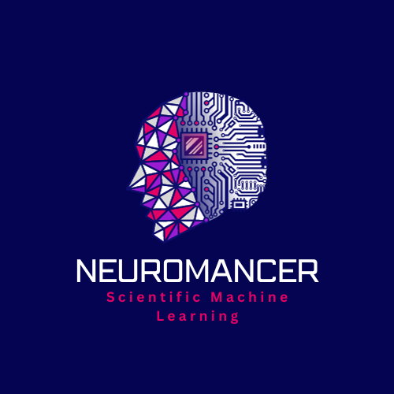

LEANOPT-24
AAAI Workshop on Learnable Optimization
at AAAI 2024 - February 26
Location: Vancouver Convention Centre – West Building, Room 204
The AAAI Workshop on Learnable Optimization (LEANOPT) builds on the momentum that has been directed over the past 6 years, in both the operations research (OR) and machine learning (ML) communities, towards establishing modern ML methods as a “first-class citizen” at all levels of the OR toolkit.
While much progress has been made, many challenges remain due in part to data uncertainty, the hard constraints inherent to OR problems, and the high stakes involved. LEANOPT will serve as an interdisciplinary forum for researchers in OR and ML to discuss technical issues at this interface and present new ML approaches and software tools that accelerate classical optimization algorithms (e.g., for continuous, combinatorial, mixed-integer, stochastic optimization) as well as novel applications.
While we are planning an in-person workshop to be held at AAAI-23. LEANOPT will be a one-day workshop consisting of a mix of events: multiple invited talks by recognized speakers from both OR and ML covering central theoretical, algorithmic, and practical challenges at this intersection; a poster session for accepted abstracts; and hands-on programming session featuring two open-source libraries NeuroMANCER and PyEPO.
We invite researchers to submit extended abstracts (2 pages including references) describing novel contributions and preliminary results, respectively, to the topics above. Submissions tackling new problems or more than one of the aforementioned topics simultaneously are encouraged.
Registration in each workshop is required by all active participants, and is also open to all interested individuals. For more information please refer to AAAI-24 Workshop page.

University of Southern California
Abstract: TBD
Bio: Bistra Dilkina is an Associate Professor of Computer Science at the University of Southern California. She is also the co-Director of the USC Center for AI in Society (CAIS), a joint effort between the USC Viterbi School of Engineering and the USC Suzanne Dworak-Peck School of Social Work. During 2013-2017, Dilkina was as an Assistant Professor in the College of Computing at the Georgia Institute of Technology and a co-director of the Data Science for Social Good Atlanta summer program. She received her PhD from Cornell University in 2012, and was a Post-Doctoral Associate at the Institute for Computational Sustainability until 2013. Dilkina is one of the junior faculty leaders in the young field of Computational Sustainability, and has co-organized workshops, tutorials, special tracks at major conferences on Computational Sustainability and related subareas. Her work spans discrete optimization, network design, stochastic optimization, and machine learning.
Princeton University
Abstract: TBD
Bio: Bartolomeo Stellato is an Assistant Professor in the Department of Operations Research and Financial Engineering at Princeton University. Previously, he was a Postdoctoral Associate at the MIT Sloan School of Management and Operations Research Center. He received a DPhil (PhD) in Engineering Science from the University of Oxford, a MSc in Robotics, Systems and Control from ETH Zürich, and a BSc in Automation Engineering from Politecnico di Milano. He is the developer of OSQP, a widely used solver in mathematical optimization. Bartolomeo Stellato's awards include the NSF CAREER Award, the Franco Strazzabosco Young Investigator Award from ISSNAF, the Princeton SEAS Innovation Award in Data Science, the Best Paper Award in Mathematical Programming Computation, and the First Place Prize Paper Award in IEEE Transactions on Power Electronics. His research focuses on data-driven computational tools for mathematical optimization, machine learning, and optimal control.
Cornell Tech
Abstract: TBD
Bio: Andrea Lodi is an Andrew H. and Ann R. Tisch Professor at the Jacobs Technion-Cornell Institute at Cornell Tech and the Technion. He is a member of the Operations Research and Information Engineering field at Cornell University. He received his PhD in System Engineering from the University of Bologna in 2000 and he was a Herman Goldstine Fellow at the IBM Mathematical Sciences Department, NY in 2005–2006. He was a full professor of Operations Research at DEI, the University of Bologna between 2007 and 2015. Since 2015, he has been the Canada Excellence Research Chair in “Data Science for Real-time Decision Making” at Polytechnique Montréal. His main research interests are in Mixed-Integer Linear and Nonlinear Programming and Data Science and his work has received several recognitions including the IBM and Google faculty awards. Andrea is the recipient of the INFORMS Optimization Society 2021 Farkas Prize. He is the author of more than 100 publications in the top journals of the field of Mathematical Optimization and Data Science. He serves as Editor for several prestigious journals in the area. He has been the network coordinator and principal investigator of two large EU projects/networks, and, since 2006, consultant of the IBM CPLEX research and development team. Andrea Lodi is the co-principal investigator of the project “Data Serving Canadians: Deep Learning and Optimization for the Knowledge Revolution,” recently funded by the Canadian Federal Government under the Apogée Programme and scientific co-director of IVADO, the Montréal Institute for Data Valorization.
Politecnico di Milano
Abstract: Model-based design approaches are increasingly proving insufficient to cope with the growing complexity of contemporary science and engineering. This has given way to the ascendancy of learning-based methods, able to leverage a posteriori knowledge coming from observations to make designs without the need to reconstruct the underlying data generation mechanism. However, ensuring the reliability of solutions obtained through learning-based approaches necessitates the development of truly new theoretical foundations. This presentation aims to introduce the scenario approach, a relatively recent, yet firmly established, framework for learning-based optimization and decision-making. Within this framework, recent developments have unveiled a profound and broadly applicable connection between the "risk" - defined as the probability of underperforming on new, out-of-sample data - and an observable quantity, called "complexity". While this result reveals that data contain more information than expected, it also enables the attainment of tight assessments of the risk, opening the door to a dependable usage of learning-based methods in automated, human-free, decision-making.
Bio: Simone Garatti received both his M.S. and Ph.D. in Information Technology from the the Politecnico di Milano, Italy, in 2000 and 2004, respectively. After graduating, he joined the Faculty of the Politecnico di Milano, where he currently holds a position of Associate Professor in the Automatic Control area at the Dipartimento di Elettronica, Informazione e Bioingegneria. He also held visiting positions at some prestigious foreign universities, like the University of California San Diego (UCSD) (as winner of a fellowship for the short-term mobility of researchers from the National Research Council of Italy), the Massachusetts Institute of Technology (MIT), and the University of Oxford. From 2013 to 2019 he served for the EUCA Conference Editorial Board, while he is currently member of the IEEE-CSS Conference Editorial Board and Associate Editor for the International Journal of Adaptive Control and Signal Processing and for the Machine Learning and Knowledge Extraction journal. He is also member of the IFAC Technical Committee on Modeling, Identification and Signal Processing, of the IEEE-CSS Technical Committee on Robust and Complex Systems, and of the IEEE-CSS Technical Committee on System Identification and Adaptive Control. Simone Garatti is one the founders of the theory of the scenario approach, a unitary framework to make designs where the effect of uncertainty is controlled by knowledge drawn from past experience, and in recognition of his contributions, he was invited speakers at various workshops, he was keynote speaker in the IEEE 3rd Conference on Norbert Wiener in the 21st Century in 2021, and he gave a semi-plenary address in the 2022 European Conference on Stochastic Optimization and Computational Management Science (ECSO-CMS). Simone Garatti is the author/co-author of the book "Introduction to the Scenario Approach" published by SIAM in 2018 and of more than 100 contributions in international journals, international books, and proceedings of international conferences. Besides data-driven optimization and decision-making, his research interests also include system identification, uncertainty quantification, and machine learning.
This two-hour long session will provide hands-on code tutorials in the form of well documented jupyter notebooks introducing two popular open-source libraries integrating constrained optimization with deep learning.
Summary: PyEPO (PyTorch-based End-to-End Predict-then-Optimize Tool) is a Python-based, open-source software that supports modeling and solving predict-then-optimize problems with the linear objective function. The core capability of PyEPO is to build optimization models with GurobiPy, Pyomo, or any other solvers and algorithms, then embed the optimization model into an artificial neural network for the end-to-end training. For this purpose, PyEPO implements various methods as PyTorch autograd modules.
Summary: Neural Modules with Adaptive Nonlinear Constraints and Efficient Regularizations (NeuroMANCER) is an open-source differentiable programming (DP) library for solving parametric constrained optimization problems, physics-informed system identification, and parametric model-based optimal control. NeuroMANCER is written in PyTorch and allows for systematic integration of machine learning with scientific computing for creating end-to-end differentiable models and algorithms embedded with prior knowledge and physics.
